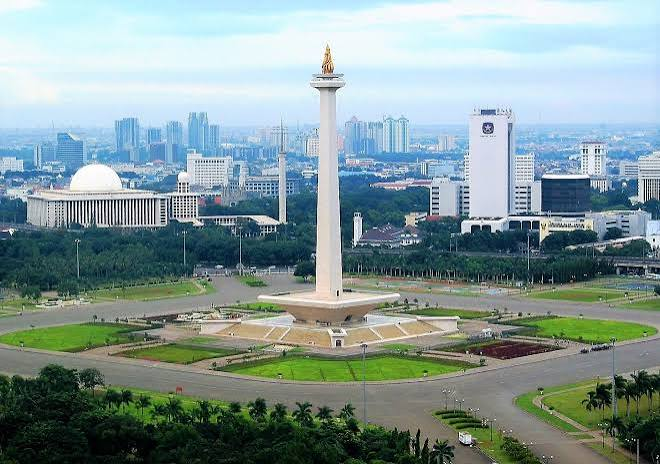
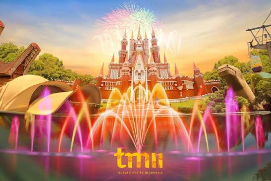

Destinasi Populer Jakarta
Pilih tujuan wisata favorit Anda beserta informasi harga tiket masuk terbaru

Monumen Nasional (Monas)
Ikon kemerdekaan Indonesia setinggi 132 meter dengan museum sejarah dan pelataran puncak panorama kota Jakarta.
Tiket Masuk & Jam Buka:
- Taman: Gratis (06.00–22.00 WIB)
- Museum: Dewasa Rp8.000 | Pelajar Rp3.000
- Puncak: Dewasa Rp24.000 | Pelajar Rp6.000

Kawasan Kota Tua Jakarta
Menjelajahi bangunan bersejarah peninggalan era Batavia, Museum Fatahillah, serta suasana klasik Taman Fatahillah.
Tiket Masuk & Jam Buka:
- Area Taman Fatahillah: Gratis
- Museum: Rp10.000 (Weekday) / Rp15.000 (Weekend)
- Pelajar/Anak: Rp5.000 (Tutup hari Senin)

Taman Mini Indonesia Indah
Taman rekreasi budaya yang merangkum kekayaan rumah adat, museum, kereta gantung, dan pertunjukan Nusantara.
Tiket Masuk & Jam Buka:
- Pengunjung: Rp25.000 (Weekday) / Rp35.000 (Weekend)
- Kendaraan: Motor Rp15.000 | Mobil Rp35.000
- Buka setiap hari pukul 05.00–20.00 WIB